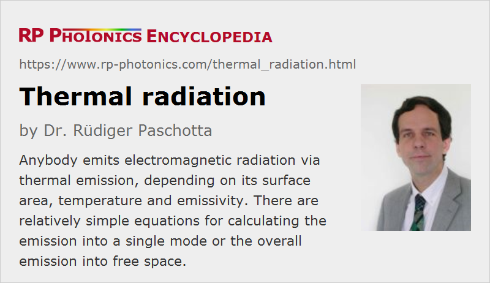

Thermal Radiation
Definition: electromagnetic radiation which results from thermal emission
Alternative term: heat radiation
More general term: electromagnetic radiation
German: thermische Strahlung
Categories: quantum optics, physical foundations
How to cite the article; suggest additional literature
Author: Dr. Rüdiger Paschotta
Any object emits some amount of electromagnetic radiation of thermal nature, which is called thermal radiation or sometimes heat radiation. This means that some of the thermal energy is converted into electromagnetic radiation energy. Only at absolute zero temperature, which can never be exactly reached, that thermal radiation would vanish.
At the same time, objects may absorb radiation and get hotter that way. Therefore thermal radiation provides a mechanism for exchanging heat between objects.
Thermal radiation is well known from light bulbs and from the sun, for example. Even if the temperature is not high enough to generate visible thermal radiation, there may be strong infrared radiation which can be felt on the skin, for example. Further examples are given below.
Thermal radiation is visible due to sufficiently high temperatures, it is also called incandescence.
Thermal Radiation in a Single Mode
We first consider thermal radiation in a single mode, which is simpler to understand than thermal radiation in free space, where many modes are involved. As a theoretical example, we can take a single-mode fiber, for simplicity assuming that it is lossless and single-mode at any wavelength. Here, we actually have two modes per propagation direction, corresponding to different polarization directions, but in the following we can consider radiation only for one of those directions. Also, we assume that both ends of some length of such a fiber are fully covered with black coatings, and that the whole setup is kept at a certain absolute temperature T. In thermal equilibrium, some amount of thermal radiation will travel in the fiber in both directions.
For calculating that amount of power, we can imagine that we suddenly replace the black coatings with highly reflecting coatings, so that we now have an optical resonator, but we still have the same amount of thermal radiation inside the fiber which has previously been captured. (That amount of light will also not change thereafter; the system remains in thermal equilibrium.) Each mode of the fiber resonator will on average have an energy which is determined by Bose–Einstein statistics:
with the photon energy hν corresponding to the mode frequency. For optical frequencies in the near infrared, for example, and temperatures around room temperature, the photon energy is well above the thermal energy kBT, so that the average energy in the mode is far below the photon energy. There is then sometimes one thermal photon in the mode, but at most times no photon at all. In the contrary situation of very low optical frequencies (in the far infrared) or a high temperatures, where the thermal energy kBT is well above the photon energy, the mean energy would be approximately kBT – now independent of the optical frequency. That is actually the value which would be expected based on classical physics, ignoring the quantum nature of light.
The mode spacing of the fiber resonator in terms of optical frequency is
where neff is the effective refractive index of the fiber and L the fiber length. The mean optical power circulating in one mode of the resonator is the mean energy divided by the round-trip time 2 neff L / c, which is the inverse mode frequency spacing.
For the original configuration with the black coatings on the fiber ends, we do not have modes, but rather thermal radiation which is smoothly spread over a large range of optical frequencies. However, the power spectral density of that radiation (in units of W/Hz) equals the average value for the fiber resonator and can thus be calculated as:
This result is independent of the fiber length and the mode spacing. For very low frequencies, it is approximately kBT, i.e., even frequency-independent.
If the fiber were lossless and single-mode for any optical frequencies, the result could be integrated over all frequencies to obtain the total thermal power
For two polarization directions in a fiber, one would obtain twice that power.
We have a square dependence on the absolute temperature, essentially because the mean energy of each low-frequency mode is proportional to the temperature, and the number of such modes with a photon energy well below the thermal energy is also proportional to the temperature.
As a numerical example, we can calculate the average optical power in the wavelength interval from 1000 nm to 1100 nm for an absolute temperature of 1000 K (≈ 727 °C) to be 5.9 pW. That would not even be easy to detect with a photodiode, for example. The total thermal power would be 473 nW; most of it would be at infrared wavelengths longer than those of our wavelength interval.
Figure 1 shows the calculated power spectral density as a function of wavelength for different temperatures. Figure 2 shows the total thermal power as a function of temperature.
If the coatings at the two fiber ends were not completely black (absorbing), and possibly not equally absorbing at both sides, the propagating thermal powers would nevertheless stay unchanged, as long as the temperatures remain constant. A lower emissivity on one side would reduce the corresponding emitted power, but at the same time this would imply a higher reflectivity for thermal radiation coming from the other side (assuming a zero transmissivity). Therefore, a coating with lower emissivity would at the same time emit less radiation but also absorb the same reduced amount of it.
For obtaining a higher usable thermal power in the near infrared, for example, could in principle have an absorbing coating at one fiber end, which is kept at a high temperature, and use the other fiber end without a coating as the output. However, the applicable temperature would be limited with that technical approach. Instead, one can use the emission of a high temperature filament of a light bulb, imaging the filament to the fiber end. If the image of the hot filament completely covers the whole fiber core and the imaging optics are a lossless, one can obtain the same thermal power in the fiber as calculated with the equation above. Note that the temperature of the filament is the limiting factor. A more powerful lamp but without a hotter filament would not help; with that, one could not produce a higher intensity of thermal radiation at the fiber end. In other words, the radiance of a thermal source is fundamentally limited by the temperature.
When using a multimode fiber, each fiber mode could obtain the same power of thermal radiation as discussed above for a single mode. Therefore, one could obtain a correspondingly larger total thermal power that way. As the number of guided modes generally increases with optical frequency, the resulting spectral shape of the over all guided light would also be modified accordingly.
Thermal Radiation in Free Space
The situation with thermal radiation in free space is somewhat more complicated, since there is a large number of modes involved, and the mode density depends on the optical frequency.
It can be shown by considering an empty box with cuboid shape and reflecting inner surfaces, for example, that the mode density in terms of the number of modes per frequency interval scales with the square of the optical frequency. With such considerations, one can obtain Planck's law for the spectral radiance of a blackbody with the absolute temperature T at the optical frequency ν:
When referring to wavelengths, one obtains a modified form:
When a preliminary form of that law was heuristically developed by Max Planck in 1900, the underlying physics were not yet understood; essentially, the quantum nature of light only started to be discovered around that time.
Before Planck, Rayleigh–Jeans law had been developed based on classical physics, i.e., not taking into account quantum effects. This is what ones approximately obtains from Planck's law in the regime hν ≪ kBT, where the second term in the equation for Le,Ω,ν is approximately kBT. The divergence for infinite optical frequencies (“ultraviolet catastrophe”) was an obvious concern, and was fixed by the introduction of Planck's law. Wien approximation corresponds to the opposite limit for Planck's law (hν ≫ kBT).
By integrating Planck's formula over all optical frequencies and spatial directions, one can derive the Stefan–Boltzmann law for the total emitted optical power of a blackbody per unit area:
with the Stefan–Boltzmann constant σ ≈ 5.6704 · 10−8 W m−2 K−4. Note that here the power is proportional to T4 while it is proportional to T2 in the case of emission into a single mode. This is because the number of available free-space modes (in three dimensions) scales with the square of the energy, while the mode density in the single-mode case is constant.
Figure 5 shows the thermal radiant exitance (identical to the radiosity) vs. temperature in a wide temperature range, using a doubly logarithmic scale.
If an object is not a blackbody, on could in principle multiply the result with the emissivity. This, however, works only if the emissivity is frequency-independent – which it is usually not.
The optical frequency with maximum information according to Planck's law is proportional to the temperature. Note that a similar equation can be derived for the spectral density in terms of wavelengths (Wien's displacement law), and the maximum of that function does not correspond to the mentioned optical frequency, since the conversion from frequency to wavelength intervals involves another wavelength-dependent factor.
Coherence of Thermal Light
Thermal radiation is generally broadband, i.e., its energy is spread over a wide frequency range. That implies a low temporal coherence. However, one could in principle have a material with a high emissivity in a very limited frequency range and very low emissivity otherwise; that way, one may obtain thermal radiation with increased temporal coherence.
The spatial coherence of light with thermal origin is also normally small, because it arises from uncoordinated (incoherent) emission from a substantial area. Higher spatial coherence can be obtained by using thermal emission from a small emitter. However, it will usually be hard to achieve a spatial coherence which is comparable to that of a laser.
Practical Importance of Thermal Radiation
Thermal radiation is relevant in many areas of photonics technology and more generally in engineering. Some examples:
- Many light sources are based on the emission of thermal radiation. The classical example is the incandescent lamp, but there are also thermal infrared emitters for use in spectroscopy, for example.
- Thermal radiation can be a challenge when some object needs to be thermally insulated. For example, even an object which is suspended in a vacuum chamber, such that thermal conduction is minimized, can exchange thermal energy with its surroundings through radiation. Therefore, one sometimes uses layers with low emissivity (or low-emissivity coatings on surfaces) as an element for thermal insulation.
- Thermal infrared emission is exploited for infrared temperature measurements and thermal imaging purposes.
As the photon energy of visible light is well above the thermal energy at room temperature, thermal emission is usually not an issue in optics, including photodetection. This is different in radio technology, for example, where sensitive detectors can easily register thermal radiation.
Questions and Comments from Users
Here you can submit questions and comments. As far as they get accepted by the author, they will appear above this paragraph together with the author’s answer. The author will decide on acceptance based on certain criteria. Essentially, the issue must be of sufficiently broad interest.
Please do not enter personal data here; we would otherwise delete it soon. (See also our privacy declaration.) If you wish to receive personal feedback or consultancy from the author, please contact him e.g. via e-mail.
By submitting the information, you give your consent to the potential publication of your inputs on our website according to our rules. (If you later retract your consent, we will delete those inputs.) As your inputs are first reviewed by the author, they may be published with some delay.
Bibliography
| [1] | L. S. Fohrmann et al., “Single mode thermal emission”, Opt. Express 23 (21), 27672 (2015), doi:10.1364/OE.23.027672 |
| [2] | R. Paschotta, “Coherent light from a bulb?”, The Photonics Spotlight 2009-11-03 |
| [3] | R. Paschotta, “Launching light from a bulb into a single-mode fiber”, The Photonics Spotlight 2008-02-22 |
See also: emissivity, absorption, infrared light, infrared emitters, thermal imaging
and other articles in the categories quantum optics, physical foundations
|  |
If you like this page, please share the link with your friends and colleagues, e.g. via social media:
These sharing buttons are implemented in a privacy-friendly way!